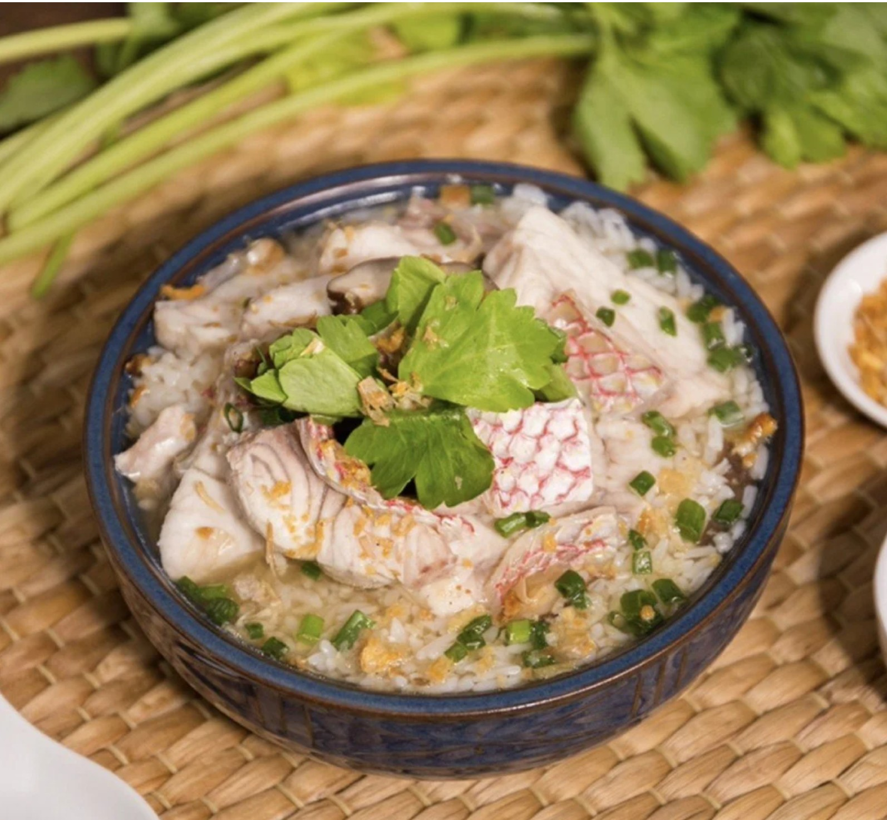

วัตถุดิบข้าวต้มปลา
วัตถุดิบข้าวต้มปลา
ข้าวสวย 2 ทัพพี
ปลากะพงแดงหั่นชิ้น 500 กรัม
เห็ดหอม 4 ดอก
ข่าหั่นแว่น 1 แง่ง
รากผักชี 2 ราก
ซีอิ๊วขาว 2 ช้อนโต๊ะ
พริกไทย 1 ช้อนโต๊ะ
ซุปกระดูกหมู 1 ลิตร
ขึ้นฉ่ายหั่นท่อน
ต้นหอมซอย
กระเทียมเจียว
วิธีทำข้าวต้มปลา
-ตั้งหม้อบนเตา ใส่น้ำซุปกระดูกหมู ข่าหั่นแว่น และรากผักชีลงไป ต้มให้เดือด แล้วตามด้วย เนื้อปลากะพงแดง และเห็ดหอม
-เมื่อเนื้อปลาสุก ปรุงรสด้วย ซีอิ๊วขาว และพริกไทยป่น
ตักน้ำซุป และเนื้อปลาที่ต้มไว้ ราดลงบนข้าวสวย โรยตกแต่งด้วย ขึ้นฉ่าย ต้นหอม และกระเทียมเจียว
